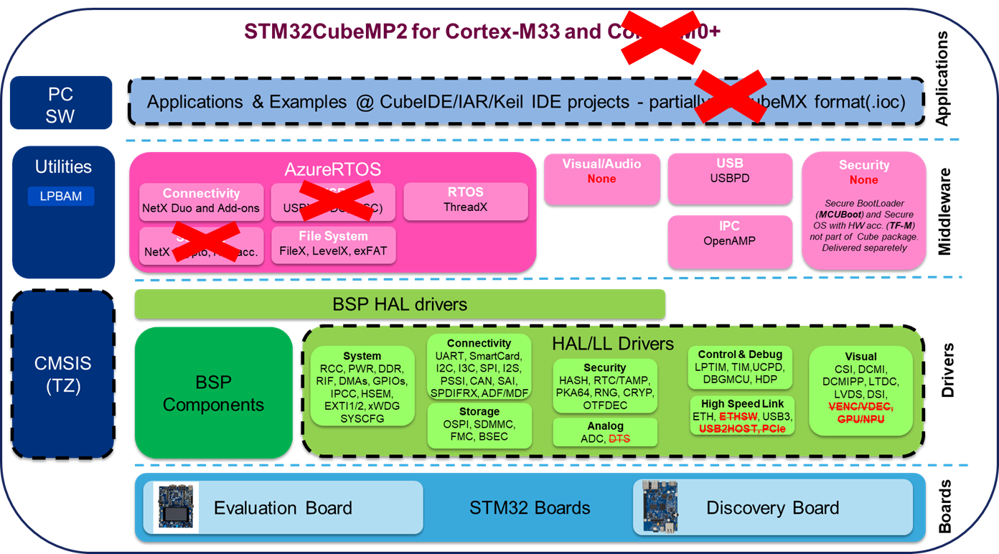

Release Notes for STM32CubeMP25 Firmware Package
Copyright © 2022 STMicroelectronics
Purpose
STMCube is an STMicroelectronics original initiative to ease developers life by reducing development efforts, time and cost.
STM32Cube covers STM32 portfolio.
STM32Cube Version 1.x includes:
The STM32CubeMX, a graphical software configuration tool that allows to generate C initialization code using graphical wizards.
A comprehensive embedded software platform, delivered per series
The STM32Cube HAL, an STM32 abstraction layer embedded software, ensuring maximized portability across STM32 portfolio.HAL APIs are available for all peripherals.
Low-layer APIs (LL) offering a fast light-weight expert-oriented layer which is closer to the hardware than the HAL. LL APIs are available only for a set of peripherals.
A consistent set of middleware components such as FreeRTOS, OpenAMP.
All embedded software utilities, delivered with a full set of examples.
The STM32Cube firmware solution offers a straightforward API with a modular architecture, making it simple to fine tune custom applications and scalable to fit most requirements. 
The drivers provided within this package support the STM32MP251/253/257 lines.
Update history
Main changes
Pre-Alpha release
Contents
The Project categories flagged by “” have changed since the previous release. “” are new.
Projects
All Projects are tested on STM32MP2 VALID3 board but can easily be tuned for other MP2 boards
| Board | Project category | Path | Status |
|---|---|---|---|
| STM32MP2 VALID3 | Application | ProjectsSTM32MP257F-VALID3/Applications/OpenAMP/OpenAMP_TTY_echo | PASSED |
Components
The components flagged by “” have changed since the previous release. “” are new.
| Name | Version | Release note |
|---|---|---|
| ARM CMSIS Package | V5.6.0 | release notes |
| Cortex-M CMSIS | V5.3.0 | release notes |
| Cortex-A CMSIS | V1.1.4 | release notes |
| STM32MP2xx CMSIS | V0.1.0 | release notes |
| STM32MP2xx HAL | V0.1.0 | release notes |
| BSP STM32MP2xx VALIDx (VALID3) | V0.1.0 | |
| BSP Common | V7.2.1 | release notes |
| BSP tcpp0203 | V1.2.2 | release notes |
Middlewares
| Name | Version | Release note |
|---|---|---|
| OpenAMP | ||
| - libmetal | V2021.10_20220118 | release notes |
| - open-amp | V2021.10_20220118 | release notes |
| - mw_if | V2021.10_20220118 | release notes |
| STM32 USB-C Power Delivery MP2 Device Driver | v0.1.0 | release notes |
| STM32 USB-C Power Delivery Core Stack Library | v4.3.0_rc1 | release notes |
| CMSIS-RTOS wrapper for Azure RTOS ThreadX | tx-cmsis-1.0.4.211108 | release notes |
| Azure RTOS FileX for STM32 devices | filex-6.1.10.220401 | release notes |
| Azure RTOS LevelX for STM32 devices | levelx-6.1.10.220401 | release notes |
| Azure RTOS NetXDuo for STM32 devices | netxduo-6.1.10.220513 | release notes |
| Azure RTOS Threadx for STM32 devices | threadx-6.1.10.220513 | release notes |
Utilities
| Name | Version | Release note |
|---|---|---|
| OP-TEE (Partial) | 3.16.0-stm32mp25-alpha-r1 | |
| GUI_INTERFACE | GUI_V2.2.2 | release notes |
| TRACER_EMB | V1.9.0_rc1 | release notes |
| lpbam | V0.1.0 | release notes |
Known limitations
None
Development toolchains and compilers
- STM32CubeIDE 1.11.0.22_MP2-D2
- Toolchain version (GCC): GNU Tools for STM32 (10.3-2021.10)
Supported devices and boards
- The delivery provided support the following devices :
- STM32MP257Axx, STM32MP257Cxx
- Boards supported; :
- STM32MP2xx-VALID3 (using STM32MP57CXX_VALIDX BSP)
Backward compatibility
- Not applicable